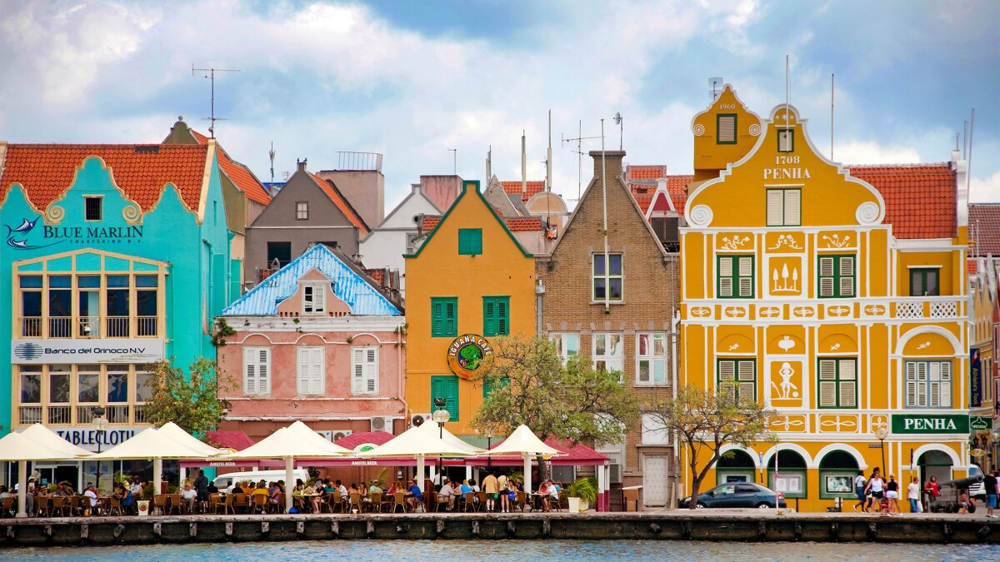
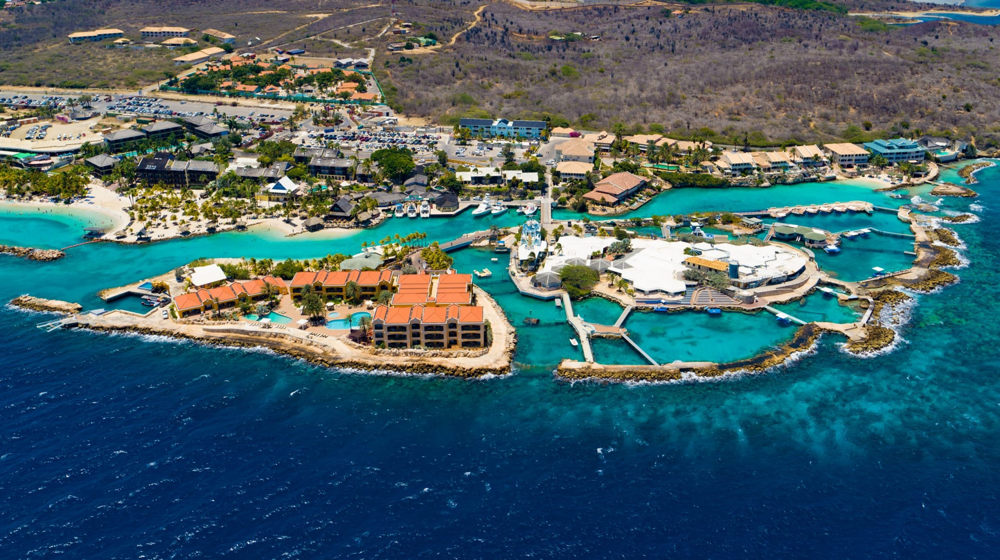

Known for its colorful houses and stunning natural beauty Curaçao is located east of Aruba and west of Bonaire These are some of our favorite attractions in Curaçao.
Located in Willemstad, Curaçao, the Punda neighborhood is known for its picturesque, colorful houses. Punda has some of the best shops on the island, ranging from local jewelery to men's clothing. In addition, many cafes line the cobblestone streets of Punda. Here you can enjoy amazing food any time of the day from Karni Stoba, a meat stew made with goat and vegetables, to Oliebollen, fried dough balls topped with sugar. Across the bay from Punda is the neighborhood of Otrobanda. The Queen Emma Bridge connects the two neighborhoods. The majority of Willemstad's residents live here and the neighborhood boasts a wide array of murals. Just like Punda, Otrobanda also has its fair share of colorful houses, restaurants, and bars, along with a museum on the history of the Atlantic Slave Trade.
Not far from Willemstad is the Curaçao Sea Aquarium. This open-area aquarium is home to hundreds of species of fish, dolphins, flamingoes, and other sea animals. Due to its proximity to the sea, seawater is pumped into the tanks, allowing the animals to survive without depending on advanced technology. As a result, the Curaçao Sea Aquarium contains some of the most natural exhibits in the world due to its reliance on the sea. You will be able to dive or snorkel with the marine life at the aquarium as part of your admission. Additionally, you will have the opportunity to interact with the animals underwater through snorkeling.
